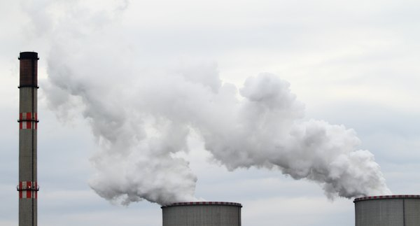
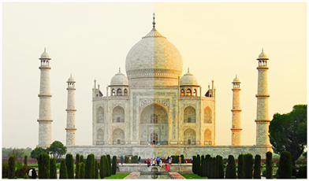
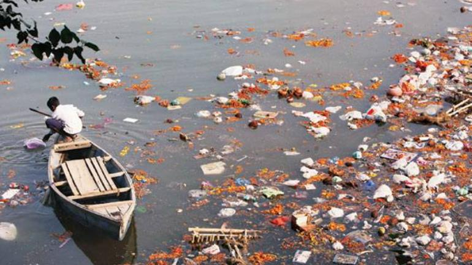
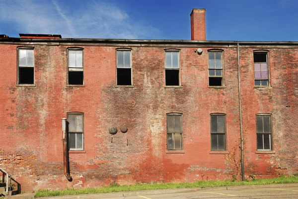
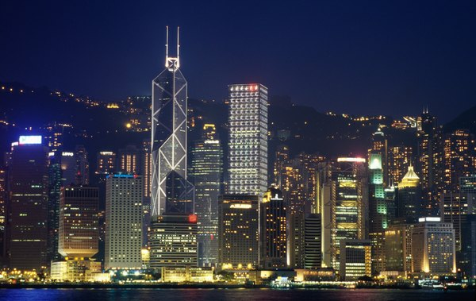

What is Pollution and What are its type

The term "pollution" refers to any substance that negatively impacts the environment or organisms that live within the affected environment. The five major types of pollution include: air pollution, water pollution, soil pollution, light pollution, and noise pollution.
1> Air Pollution
A major source of air pollution results from the burning of fossil fuels. Vehicle and factory emissions are common sources of this type of air pollution. The burning of fossil fuels contributes to the formation of smog, a dense layer of particulate matter that hangs like a cloud over many major cities and industrial zones. Air pollution contributes to respiratory problems such as asthma, lung cancer, chronic bronchitis, and other lung ailments. Nitrogen and sulfur oxides in the air contribute to acid rain, which is a form of precipitation with a lower (more acidic) pH than normal. Acid rain harms forests, species that live in water bodies, and degrades outdoor statues, monuments, and buildings.
Example of Acid Rain is Taj Mahal

2> Water Pollution

This is the picture of our where own Ganaga River
A major source of water pollution is runoff from agricultural fields, industrial sites, or urban areas. Runoff disrupts the water body's natural balance. For example, agricultural runoff typically includes fertilizer or toxic chemicals. Fertilizer can cause algal blooms (an explosive growth of algae), choking out other plants and decreasing the amount of available oxygen necessary for the survival of other species. Raw sewage is another type of water pollutant. When sewage gets into the drinking water supply, serious stomach and digestive issues may result, including the spread of diseases such as typhoid or dysentery. A third source of water pollution is trash. Improperly disposed of items, such as plastic bags, fishing line, and other materials may accumulate in the water and lead to the premature death of animals that get tangled within the garbage.
Ganga is like our mother as described in our culture so if we keep on doing what we are doing then it can happen soon with other rivers like Yamuna that's why it is our duty to stop the pollution we know it cannot be done by one person but if everyone will understand thier duty then soon we can overcame the problem of pollution and our Ganga River would be back to its original form
3> Soil Pollution

Soil can become polluted by industrial sources or the improper disposal of toxic chemical substances. Common sources of soil pollution include asbestos, lead, PCBs, and overuse of pesticides/herbicides. In the United States, the Environmental Protection Agency (EPA) is in charge of cleaning up uncontrolled hazardous waste sites, which are referred to as "Superfund" sites. Many of these sites are abandoned or improperly-managed industrial zones.
4> Light Pollution

Light pollution refers to the large amount of light produced by most urban and other heavily-populated areas. Light pollution prevents citizens from seeing features of the night sky and has also been shown to impede the migration patterns of birds and the activities of nocturnal animals.
5> Noise Pollution
Noise pollution can be defined as any disturbing or unwanted noise that interferes or harms humans or wildlife. Although noise constantly surrounds us, noise pollution generally receives less attention than water quality and air quality issues because it cannot be seen, tasted, or smelled.